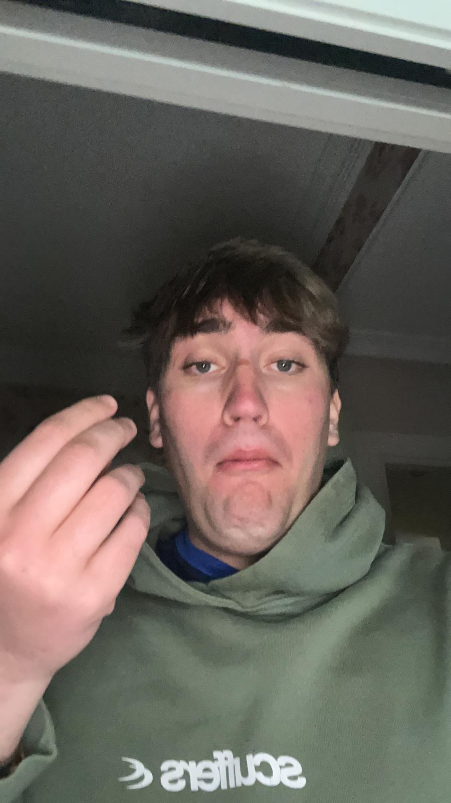
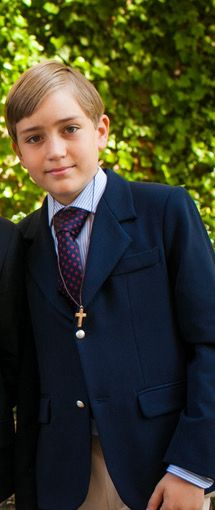
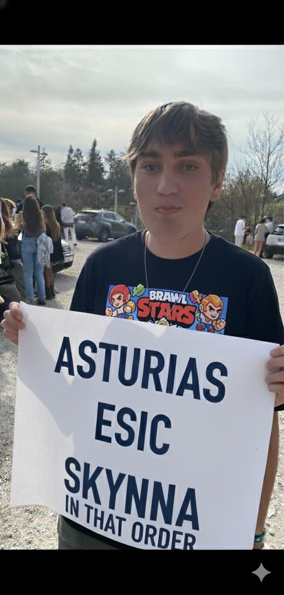
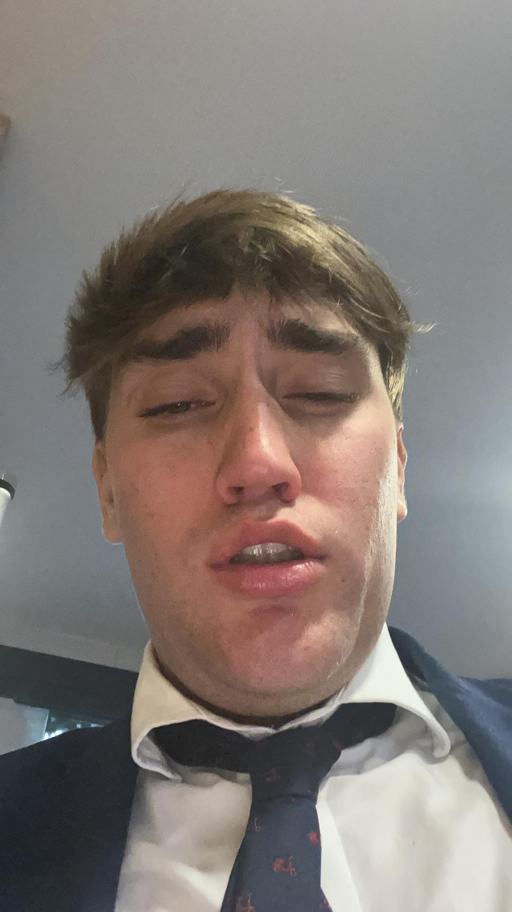
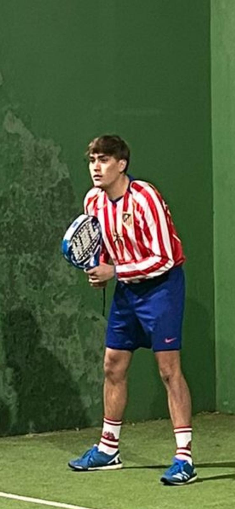
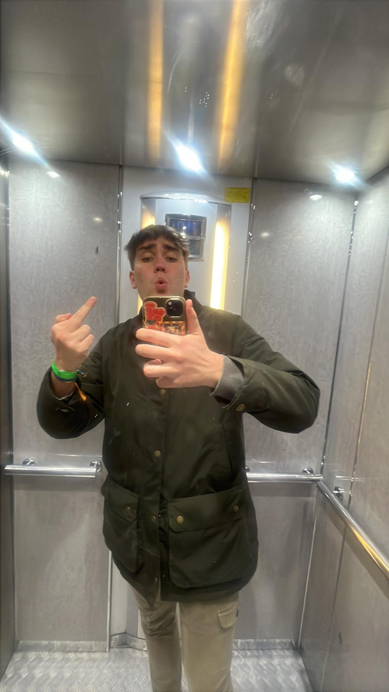
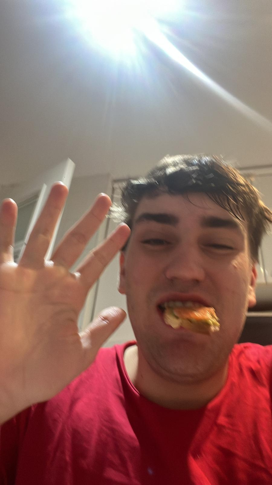
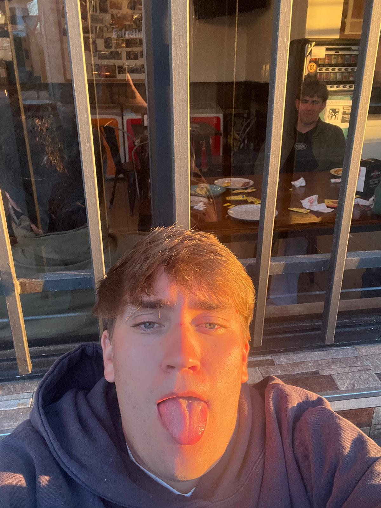

Fernando
Defensa | Dorsal 9
El numero “9” del equipo y cualquiera pensaría que es el delantero killer, pero la realidad es que
lo único que tiene de killer es para las rodillas de los rivales (y para las suyas) un jugador que
se hace sangre y el mismo no sabe ni cómo.
Le gusta el contacto con los delanteros, el poder poner su polla el culo del rival y que nadie sospeche nada, el ir al suelo cuando hay algún desajuste defensivo y auto motivarse después cualquier buena acción.
Y parece que es el jugador perfecto, sólido en defensa y simple y correcto con el balón, pero hay un problema y es en donde está el SKYNNA CF en el corazón de nuestro compañero y es que por mucho amor que intenta demostrar e intenta decir que tiene hacia este club, se nota que está y siempre estará por delante Asturias, ESIC y el Brawl Stars.
Le gusta el contacto con los delanteros, el poder poner su polla el culo del rival y que nadie sospeche nada, el ir al suelo cuando hay algún desajuste defensivo y auto motivarse después cualquier buena acción.
Y parece que es el jugador perfecto, sólido en defensa y simple y correcto con el balón, pero hay un problema y es en donde está el SKYNNA CF en el corazón de nuestro compañero y es que por mucho amor que intenta demostrar e intenta decir que tiene hacia este club, se nota que está y siempre estará por delante Asturias, ESIC y el Brawl Stars.
Galería






